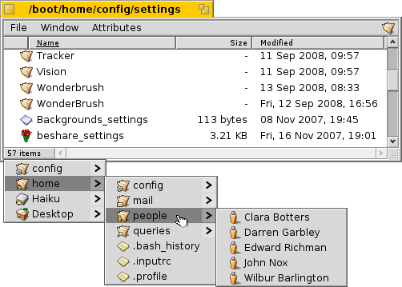
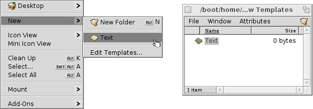
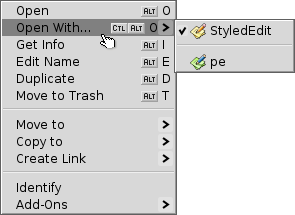
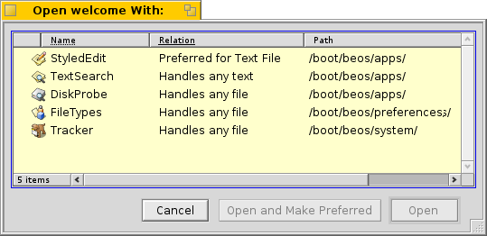

The Tracker
The Tracker is the graphical interface to all your files. It let's you create new files and folders or find, launch or rename as well as copy or delete existing ones.
Being an application like any other (the Desktop with its icons is really just a fullscreen window in the background), Tracker appears with its windows in the Deskbar and can be quit and restarted. The easiest way to quit and restart a e.g. crashed or frozen Tracker is to call the TeamManager with CTRL+ALT+DEL to kill Tracker and then click the Restart Desktop... button. The same brings back a wayward Deskbar.
Mounting Volumes
In order to access a harddisk, CD, USB stick etc., you first have to mount the volume, that is, let the system know it's there. This is done with a right-click on the Desktop or an already mounted volume (like the boot disk) and choosing the volume from the Mount submenu.

There are also Mount Settings so you don't have to mount everything manually on every bootup.
The above setting will mount all disks on bootup that were mounted previously and will automatically mount any storage device you connect/insert.
Warning:
Before you disconnect e.g. a harddrive or USB stick, make sure you have successfully unmounted the volume. This garantees that all data transfer has finished. Otherwise you may lose data or corrupt the disk!
Navigating
Moving through your folders is one of Trackers main purposes, just like the file managers on other platforms. Haiku's Tracker has some unique features that will help you doing that efficiently.
Instead of double-clicking your way down folder after folder, there's a better way to drill down:

Right-click onto a folder, and at the top of the usual context menu you'll find a submenu of the current folder that let's you navigate down a level. Just move down the hierarchy until you find the file or folder you're looking for and click on it to open it. The above shows the contents of the folder /boot/beos/system/.

Click on the area in the lower left, where the number of items are listed, and you'll get submenus for every level above you current folder. From there you can drill down through the folders as usual.
Note, that the Desktop is always the topmost level as that is where Tracker shows mounted volumes. So, if you want to go to another disk, you first have to navigate to the top (Desktop) and cross over to your other disk from there.
By default, when you double-click a folder, Tracker opens a new window while leaving the parent window open. This can quickly lead to an overcrowded desktop.
You can prevent that by holding down the left WIN key, which automatically closes the parent window.
This is also true for...
Keyboard navigation
A few shortcuts are essential for keyboard navigation:
- ALT+CURSOR-UP - Open parent folder.
- ALT+CURSOR-DOWN or RETURN - Open selected folder.
- ALT+W - Close window.
- ALT+ESC - Enter menu bar (leave with ESC).
- right MENU-KEY - Open Deskbar menu (leave with ESC).
Appearance

Tracker windows offer three different viewing modes from the Window menu:
- Icon View (ALT+1) - Big icons, you can change the size from the submenu.
- Mini Icon View (ALT+2) - Small icons.
- List View (ALT+3) - A detailed list of your files enabling you to show/hide available attributes. (See topic File Attributes.)
The Window menu offers a number of other functions:
- Resize Window (ALT+Y) - Resizes the window to its ideal size.
- Clean Up (ALT+K) - Aligns all icons to an invisible grid. Hold down SHIFT and the menu becomes Clean Up All which additionally sorts all icons alphabetically.
- Select... (SHIFT+ALT+A) - Select files according to a regular expression.
The rest of the functions are pretty self-explanatory, leaving the...
Tracker preferences
Window | Preferences... opens a panel that offers a number of setting that, where not obvious, should become clear once tried out. Since all settings are applied live, you'll immediately see the changes.
So, in short, the not so obvious settings:
- Desktop - Decide if all mounted disks appear directly on the Desktop or in a window after clicking a single Disk icon sitting on the Desktop.
- Windows - You can set Single Window Navigation, i.e. a double-clicked folder doesn't open in its own window, but inside the already open window instead, replacing the view of it's parent folder. This is not the same as clicking while holding the WIN key, as described above, because you'll lose the per window saved position and size.

Before you switch Tracker to Single Window Navigation mode, because that may feel more familiar to you, we recommend giving the menu based browsing a try first, as that may actually work much faster for you after getting used to. On the other hand, single window browsing offers a Navigator where you can enter or copy&paste a path name and use back, forward and up buttons.
- Date and Time - Set date and time formats.
- Trash - Set the behaviour when deleting a file.
- Volume Icons - Set the colour of an optional indicator of free space that's shown besides a disk's icon.
Working with files
When invoked on a selected file, the File menu offers about the same options as when you open a context menu by right-clicking the file. Exceptions are commands that don't specifically target a selected file, like Find.. or New....
As usual the usage of the commands is pretty clear, so we'll concentrate on the niftier parts.
- Find... - Find a file or folder. See topic Query for more info.
- New... - Create a new folder or any other file based on a template.
Choosing Edit Templates... opens the folder /boot/home/config/settings/Tracker/Tracker New Templates. Creating a file in that folder will offer its filetype with the file's name and other attributes as template in the New... menu. Here, there's a file "Text" with the filetype text/plain. See topic Filetypes for more info.
- Open With... - A submenu offers all applications that can handle this filetype.
The preferred application that would open the file when double-clicked, is checkmarked. In this submenu are only those applications listed that deal with the exact filetype, in this case it's a text file, the type text/plain. If you don't click on an app in the submenu, but on Open With... a panel opens:
